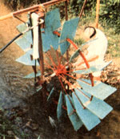

From Mother No. 82
The memory of a childhood paddle wheel helped this inventive gardener get water to his plants!
I got my first taste of waterwheels at the age of five, when my great-grandfather McDowell made me a toy paddle turbine to run under the spring-fed spigot at the back of the house. Today, some 65 years later, I've applied the principles of that early lesson to building a full-sized undershot wheel that provides me with every drop of water I need to supply my thirsty garden throughout the entire growing season.
My vegetable plot, you see, is quite a distance from the house and its plumbing. True, the garden is located not far from a small perennial mountain stream that forms the southern boundary of our property . . . but that "crick" runs a good 8' or so below my patch!
Now I certainly don't have an aversion to honest work, but the drudgery of using a hand pump to fill a washtub, lugging the sloshing vessel around, and repeating this operation at least six times every time I wanted to water my garden forced me to look for a less labor-intensive means of getting the job done. Naturally, that first waterwheel in my life came to mind, so I set about researching the design and operation of functional "paddle pumps" in hopes of building one at my site that'd handle my watering chores with a minimum of maintenance.
Because there was only about 4" of fall in the part of the stream bordering our land, an overshot wheel was out of the question. Unfortunately, I had little luck digging up specific information on undershot wheels, so I had to use common sense-and a by-guess-and-by-golly approach-to make my project a success.
Early in the game I decided that an allwood wheel would be too expensive and time-consuming to assemble. So, considering the fact that an undershot design uses paddles rather than the intricate buckets of an overshot apparatus, I figured I'd search for a metal-spoked wheel about 4' or 5' in diameter and simply fasten some plywood paddles with 1'-square blades to it.
I started by roughly calculating what I had to work with in the way of water. The creek usually runs about 2" deep at an 8' width. To create a weir that would direct the flow toward the center of the stream (thus enhancing its depth and velocity when at normal levels) but still withstand the punishment of occasional deluges, I piled rocks in the creek until the center channel was 16" wide and the water-normally-was about 8" deep .. . dimensions that I thought would be about right for the size of wheel I had in mind.
Then, to get an idea of the water's force within the channel, I held a foot-wide board in that sluiceway and used a small scale to determine the stream's "push" on the piece of wood . . . a force of about 7-1/2 pounds.
Next, I calculated the velocity of the water. I laid two long poles across the creek, 10' apart, and floated several sticks on the surface while I timed their progress. The average figure-4 seconds to cover the 10' distance-was then multiplied by 15 to arrive at 150' per minute.
Now comes the fancy part: I'd found a 4 1/2'-diameter, 16-spoke metal wheel from an old hay rake and figured out a way to mount a 12" X 12" paddle to the rim at each spoke (I'll tell you just how I did that later in this article). To establish the estimated rotational speed of the completed wheel, then, I just added the 27" radius of its steel rim to the distance from that rim to the 8" centerline of the water's force on the paddles, and came up with a lever arm of 35".
The old formula C = 2¶r gave me an overall circumference of 220", or 18.3'. Using the flow rate of 150 feet per minute through the weir channel, I calculated-by dividing 150 by 18.3-that the whole shebang would theoretically turn at about 8 revolutions per minute (RPM). Of course, knowing from experience that theory tends to be more optimistic than reality, I cut that estimate in half to account for slippage and friction after the wheel and pump were installed. (As it turned out, the wheel's actual speed averages just over 5 RPM!)
At this point I knew approximately how fast the wheel would rotate, but I still had to deduce how much torque it would provide in order to size my pump properly. A scaled-down sketch of the side view showed that with one paddle dipping 8" into the water, the adjacent paddles would each be submerged 4", which would be equivalent to having two paddles fully in the water at any given time, each furnishing a 71/2pound force from the current. By multiplying the 35" lever arm by the 15pound force from the two paddles, I arrived at 525 inch-pounds-or about 44 foot-pounds-of torque available to power the pump.
Armed with the numbers I'd worked out, I could now decide just how I was going to mount the wheel so it would function under various flow conditions . . . and work out a pump design that'd be compatible with the arrangement I would finally settle on.
Since the normally shallow creek would get several feet deep during a flood, I was a good bit concerned about protecting my water pumper. Consequently, I decided to set the wheel up on a frame so it'd swing with the stronger currents . . . rather than holding fast and trying to buck them.
To make the frame's pilings, I took two 4' lengths of 1-1/4" galvanized pipe, slashcut one end of each, and then threaded the remaining ends. Next, after capping the threads, I drove one pointed stub down into the ground on the creek bank and the other into the streambed itself so that the pipes were in line with the weir channel and far enough apart to accommodate the wheel and the swinging carriage I had in mind.
That done, I removed the pipe caps and threaded a union to the end of each pile, then fastened a short nipple and a 90° elbow to the post on the bank. I had about 12' of 1-1/4" pipe available to use for the cross-support, so I threaded one end of that section into the elbow and held the other end aloft-temporarily-on a tall wooden X frame. After checking with a level to make sure that the cross-pipe was horizontal, I used a plumb bob to determine where to cut it so it'd line up with the vertical post in the creek bed. Then I threaded that end, installed another elbow, and joined the horizontal conduit to the bed mount with a pipe of appropriate length. (I also clamped a 1/4" steel cable to the corner of this framework and fastened its other end to an anchor driven into the bank upstream . . . as extra insurance to prevent the force of the water from buckling the structure.)
My next task was to build the swinging carriage that would support the wheel and keep it in line. I started by welding the two 6' lengths of 1/8" X 2" X 2" angle iron that would hold the wheel perpendicularly to one side of a 5' piece of 1/8" X 1" X 2" channel iron so that they were centered, about 20" apart, and parallel to one another. Next, I cut a 40" section of angle iron, scrounged up a 5/8" X 19" piece of steel rod, and used both those chunks as braces between the channel and the angle iron.
Then-using the groove in the channel iron-I hung the carriage from my 1-1/4" pipe framework and welded a couple of 1/2" X 1" X 3" tabs to the channel opposite each 6' parallel arm so that I could run 3/8" X 3" bolts through the pieces to create a sort of hinge. (A U-bolt later fastened to the pipe at each end of the carriage hanger keeps the chassis from shifting sideways when the wheel's in operation.) And, to provide a place to mount my pump-one that would also swing with the carriage-I bolted a 1/4" X 8" X 8" plate to the angle iron arm nearest the garden.
The wheel was my next concern, and I tackled that problem by first enlarging its center hole to 1-3/8" in diameter . . . tapping the oiling orifice for 1/8" pipe and installing a grease fitting ... and drilling-then threading-a 1/2" setscrew hole in the center of the hub. A 1-3/8" X 30" cold-rolled shaft served as an axle, and I decided to make my own bearings out of white oak instead of purchasing conventional steel rollers . . . which might seize after repeated floodings. To do this, I bored a 1-7/16" hole through the cores of two 3" X 4" X 4" blocks, and then drilled 5/16" mounting holes through the shoulders, centered and perpendicular to the large bores. After sawing both blocks in half-"splitting" the axle holes in two-I cut grease channels and a feed into each bearing. Next, I temporarily mounted the wheel and axle assembly, within the bearings, to the 6' angle iron swing arms . . . taking into account the necessary clearance for the 12" paddles.
Since I knew I wanted the working ends of the paddles to measure 12" X 12", I extended their length to 2' to provide enough surface area for a sturdy mount. I used a piece of scrap 1/4" plywood to make my first 12" X 24" blade, which I trimmed to the shape shown in the photos and then slotted and drilled so it'd slip over the wheel rim and rest against a spoke.
Once I was satisfied that the shape and mounting arrangement would be satisfactory, I made up a sturdy sheet-aluminum template and used it to mark out my 16 paddles on two slabs of 1/2" X 4' X 8' marine plywood. By nailing four cutout blanks together, and drilling and sawing holes and rim slots as a group, I found that I could place those openings quite accurately. And after all the blades were cut, I covered them with several coats of deck paint for extra protection against the water.
To fasten the paddles to the rim, I used a pair of 1/4" X 1-3/8" U-bolts at each spoke, and to strengthen the wood at the slotted part of the blades, I made up a total of 32 aluminum strips measuring 1/8" X 2" X 4-7/8", which I bolted over the slots in pairs with 3/16" X 1-1/4" brass machine screws. (The sections of plywood removed when the slots were cut were shortened, put back in, and used to center the aluminum bridges.)
Now that the wheel and framing were completed, I felt I'd really accomplished something . . . but I still had to figure out -and construct-a pump that'd work with my setup. To keep things simple, I set my sights on a single-acting pump (which creates suction and pressure on one side of the piston only) so I wouldn't have to provide a packing gland for the piston rod. At the same time, I figured I'd mount its cylinder on a swivel, thus eliminating the need for a connecting rod and guides.
But the question of how much displacement I could have still remained. I knew the length of the pump mechanism would be limited to 42" (the distance from the wheel's axle center to the upper frame member). So I finally settled on a 9" throw for my crank, which meant that my piston would travel 18" . . . and that the two parts together would take up 27" overall. This would leave 15" for the pump fittings and swivel bracket, a working space I could easily live with.
Choosing the cylinder bore proved to be a compromise between what I wanted and what was available in standard hardware. A quick wheel-force diagram showed me that the 15-pound force acting on my paddles at 35" from the centerline on the shaft-and then transferred through a 9" crank-would amount to 35 divided by 9 (or 3.88), multiplied by 15 . . . a healthy 58.3 pounds of force.
Dividing this number by the area of the piston (I decided on a 2" Schedule 40 PVC pipe cylinder, so its cross-sectional area-using good ol' ¶r 2 -was 3.14 square inches) gave me the available pressure of the pump (18.6 pounds per square inch). From there, since I knew that it took 0.43 psi to raise water one foot in height, I could calculate the total head the pump would deliver (43.25 feet . . . plenty for my purposes) by simple division.
Furthermore, with all my "unknowns" known, it was easy for me to calculate that, guessing my wheel speed at 4 RPM, the 2" X 18" pipe pump could deliver roughly 13,565 cubic inches, or 58 gallons, per hour . . . which would amount to almost 1,400 gallons a day!
Acquiring the pump's components was simply a matter of going to the local hardware and plumbing supply store and picking out the parts I needed. My cylinder was just an 18" length of 2" Schedule 40 PVC pipe, equipped at one end with a 2" slip-to-pipe female adapter and at the other with the same type of fitting terminated in a male thread. I screwed the latter end into the common of a 2" galvanized T, then bushed the T's other two ends down to 1/2". On the intake end, I used a short nipple to a 1/2" swing check valve. Then I concentrated on creating the piston parts.
The piston rod, a 5/8" X 26" stainless steel shaft, required a bit of machine work, since it had to be threaded at each end. One tip just needed a 5/8-11 thread 1-3/4" long, but the other had to be cut down to a 1/2" diameter for a distance of 1". A 5/8"-long 1/2-13 thread was added to this stub . . . which left a 3/8" length of smooth surface between the threads and the step to the rod's 5/8" diameter.
With this done, I drilled a 21/32" hole directly in the center of a 2" galvanized pipe plug, then slipped the piston rod through that opening so its 1/2" end was on the same side as the pipe threads. A couple of body washers-with 1/2" center bores and 15/8" outside diameters-made excellent buttresses after I curved their edges slightly with a file and sandwiched two 2"-diameter leather piston cups between them. A 1/2" nut and a cotter pin held this homemade piston in place on the end of the shaft, and to alleviate the effects of water on the leather, I soaked the parts in neat's-foot oil before slipping the piston in place and threading the pipe plug to the cylinder's plastic adapter. (The leather plunger will slide home much more easily if you carefully taper the end of the cylinder's bore with a file.)
The connector at the opposite end of the piston rod was just a 1" X 1" X 3" block of steel drilled and tapped 1" deep at one end to match the rod, and cross-drilled at its other end to a 17/32" diameter. The wheel crank-a 3/8" X 2" X 11" piece of flat steel-was drilled out on a 9" center to join the 1-3/8" axle and the connector, and I welded a 1-9/16" length of 1-1/4" pipe to the large-holed end, and a 3/4" piece of 1"-diameter cold-rolled rod (tapped for 1/2-13 thread) to the other, to serve as crank collars.
Once I'd fabricated those metal parts, I constructed the swivel bracket that would hold the pump in place. That involved trimming out a 6" X 8" piece of 1/8" steel plate, welding two 1/4" X 3" X 3" X 3" angle iron sections to one end of this platform so that the lips were aligned with the plate's sides, and drilling a 1/2" hole 1" from the end of the plate at the butt joint of the two angles.
To mount the pump to the bracket, I drilled a 7/8" hole that was centered and 2" from the baseplate through each of the upright angle iron lips and let the 1/2" pipe nipples on the T serve as fastening pins. I then pinioned the swivel bracket to the 8" X 8" mounting plate on the wheel carriage, using a 1/2" X 1-1/2" bolt, two nuts, and a cotter pin.
Having come this far, I breathed easy: The rest was just a matter of fitting and finetuning. To check the wheel's lateral play, I cut a section of 1-1/4" Schedule 40 pipe into three lengths (3", 4-11/32", and 4-19/32"), and used two as spacers between the wheel hub and the bearing blocks and the third as a keeper collar on the end of the shaft opposite the pump. Also, I placed 21/4" outside diameter flat thrust washers between the pipes and the wooden parts, tightened the hub's 1/2" setscrew, and locked the collars to the main shaft with 3/8" X 2" machine bolts.
Then I fit the crank to its end of the shaft (securing it by-once more-using the technique of tightening a bolt run through a hole drilled in the axle) and fastened its other end to the piston-rod connector with a 1/2" X 3" bolt and a lock nut. (I'll tell you now, if you try a similar project yourself, be sure to employ some form of locking mechanism-whether it's cotter pins or a thread seal ant-on all your fasteners, or you'll be retightening them on a regular basis!)
Before I set the wheel into the water, I had to finish up the plumbing. On the suction side, I just ran a 6' length of heavy-walled plastic hose that terminated at an adapter and a 3/4" foot valve submerged in the water. To protect the pump from foreign matter, I wrapped the intake with aluminum screening . . . and later made up a gravity-operated sand trap-from some 2" Schedule 40 PVC pipe, a T, a 90° elbow, and a bit of woven filter packing-which I placed in line between the foot valve and the pump to catch and settle out the debris.
On the pressure side (the one with the swing check valve), I installed a 1/2" nipple and T to the check and threaded a small pressure gauge into one of the T's ports. I then ran my supply hose to the garden area and terminated it in a garden-hose fitting and another T . . . which I plan to put to use later on when I can get around to installing a pressurized holding tank and a small, decorative fountain.
Finally, I filled the wheel hub with grease to keep it from rusting to the shaft, ran plastic oil lines to the oaken bearings, and let the machine down into the water.
You've probably guessed that my waterwheel performed just as I expected it to. But it really surprised me the first time the water level in the stream increased to a foot or so. Then the wheel turned at a very respectable 11 RPM and could have delivered 3,875 gallons of H 2 0 to my garden in the course of a day. The only real problem I've experienced with my highly competent water pusher is the occasional "logjamming" that occurs when debris is carried downstream in high waters, and I solved the worst of that easily enough by driving lengths of closely spaced pipe into the creek bed upstream of the machinery.
So after waiting 65 years, I finally built a useful version of my great-grandpa McDowell's toy waterwheel. With a total investment of about $250 in the project and a lush crop of vegetables as a result, I can't complain about the many (enjoyable) hours of spare time it took me to bring my childhood fancy to reality.
Waterwheel Illustration
|
 |
|
|